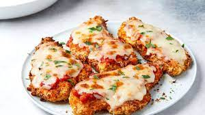

Chicken Parm

Description
Chicken Parm is a classic Italian-American dish consisting of a breaded and fried filet of chicken breast covered in sauce and melted mozarella cheese. It is usually served
with spaghetti and marinara sauce, either on the side or under the chicken.
Ingredients:
- Four boneless, skinless chicken breasts
- Bread crumbs
- Italian seasoning (parsley, oregano, basil)
- Marinara sauce
- Mozarella cheese
- Spaghetti
Steps:
- Pound the four chicken breasts flat.
- Mix the egg and flour in a bowl
- Pour the bread crumbs into a bowl with the Italian seasoning. Mix well.
- Take each chicken breast and dip in the egg/flour mixture, then in the bread crumbs.
- Fry the coated chicken breasts in a pan with olive oil until golden brown.
- Pour sauce and mozarella cheese on each chicken breast when they are nearly done.
- While the chicken is frying, boil the spaghetti.
- Place each chicken breast (topped with sauce and melted cheese) on a plate.
- Add a side of the spaghetti and some marinara sauce.